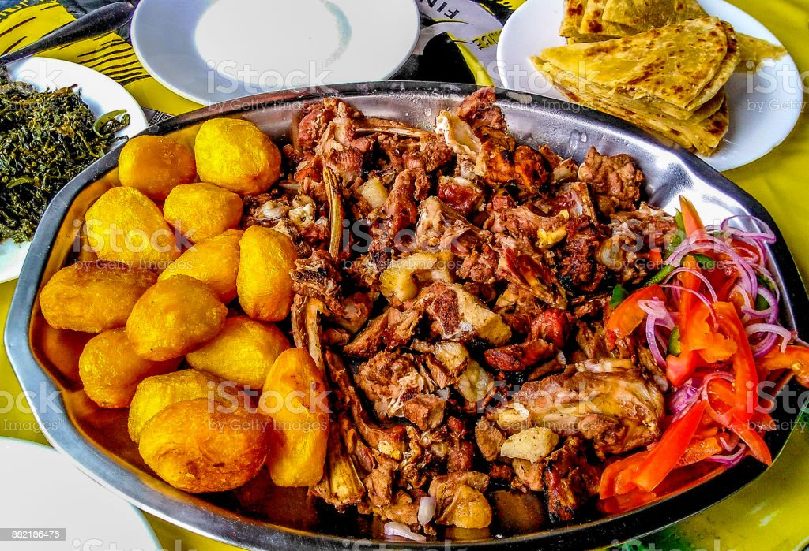

choma

Nyama choma with roasted potato
this is a typical meal in most african countries but mainly
popularised in kenya and mainly found in kitengela
these are the list of ingredients
- 1/2kg meat
- potato
- 1/4 litre oil
- onions
steps
- clean the meat and boil for 10 minutes at a temperature of about
60 degrees
- make an open fire and place the meat on the fire with the help of
meat holders
- salt the meat as you pell the outter cover of the potato
- as the meat gets roasted prepare another fire place to make the potato
- roast the potato for 15 minutes
- cut the meat to peaces then cut onions and tomato on a different plate
to make kachumbari